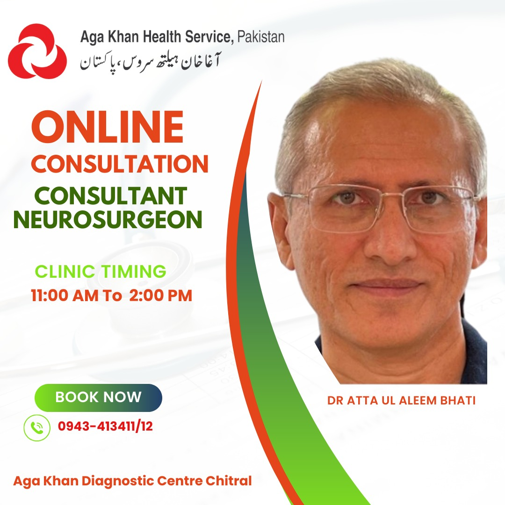

About us
Who we are
Founding Members
Events
Programs
Announcements
Chapters
Africa
Lebanon
SAARC
Europe
UAE & KSA
South East Asia
Structure
Membership
Donate
Contact
🇫🇷⌄
Information and Updates
Find announcements and updates here
Memorandum of understanding with Addis Ababa University, Ethopia

Dr. Atta's consultancy program with Agha Khan
Podcast with neuroapproaches.org
Memorandum of understanding
Article about Dr. Atta ul Aleem Bhatti in AO Foundation